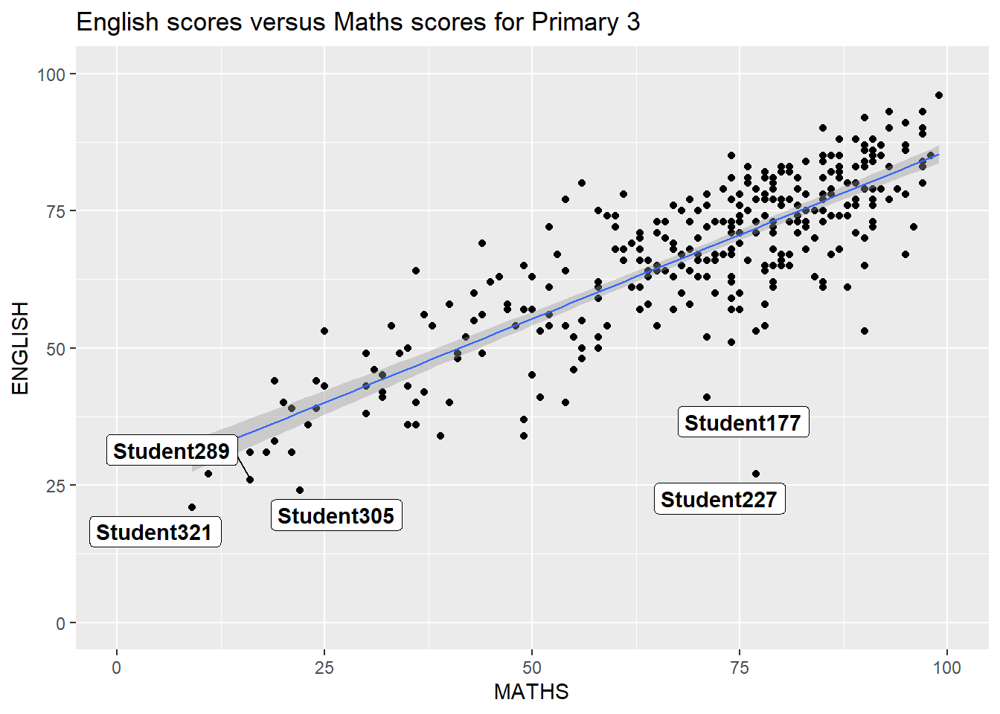

pacman::p_load(ggrepel, patchwork,
ggthemes, hrbrthemes,
tidyverse) Hands-on Exercise 2
Getting Started
Install and launching R packages
The code chunk below uses p_load() of pacman package to check if tidyverse packages are installed in the computer. if they are , then they will be lauched into R.
Importing the data
exam_data<-read_csv("data/Exam_data.csv")Rows: 322 Columns: 7
── Column specification ────────────────────────────────────────────────────────
Delimiter: ","
chr (4): ID, CLASS, GENDER, RACE
dbl (3): ENGLISH, MATHS, SCIENCE
ℹ Use `spec()` to retrieve the full column specification for this data.
ℹ Specify the column types or set `show_col_types = FALSE` to quiet this message.2.3 Beyond ggplot2 Annotation: ggrepel
Warning: Using `size` aesthetic for lines was deprecated in ggplot2 3.4.0.
ℹ Please use `linewidth` instead.`geom_smooth()` using formula = 'y ~ x'2.3.1 Working with ggrepel

2.4 Beyond ggplot2 Themes

2.4.1 Working with ggtheme package

2.4.2 Working with hrbthems package


2.5 Beyond Single Graph
p3 <- ggplot(data=exam_data,
aes(x= MATHS,
y=ENGLISH)) +
geom_point() +
geom_smooth(method=lm,
size=0.5) +
coord_cartesian(xlim=c(0,100),
ylim=c(0,100)) +
ggtitle("English scores versus Maths scores for Primary 3")2.5.1 Creating Composite Graphics: pathwork methods
2.5.2 Combining two ggplot2 graphs
p1 + p2
2.5.3 Combining three ggplot2 graphs
(p1 / p2) | p3`geom_smooth()` using formula = 'y ~ x'
2.5.4 Creating a composite figure with tag
((p1 / p2) | p3) +
plot_annotation(tag_levels = 'I')`geom_smooth()` using formula = 'y ~ x'
2.5.5 Creating figure with insert
p3+inset_element(p2,left=0.02,bottom=0.7,right=0.5,top=1)`geom_smooth()` using formula = 'y ~ x'
2.5.6 Creating a composite figure by using patchwork and ggtheme
patchwork<-(p1/p2)|p3
patchwork&theme_economist()`geom_smooth()` using formula = 'y ~ x'